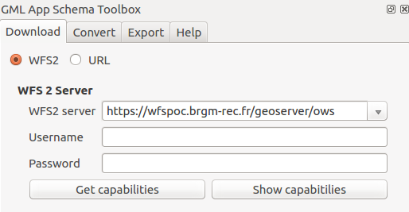
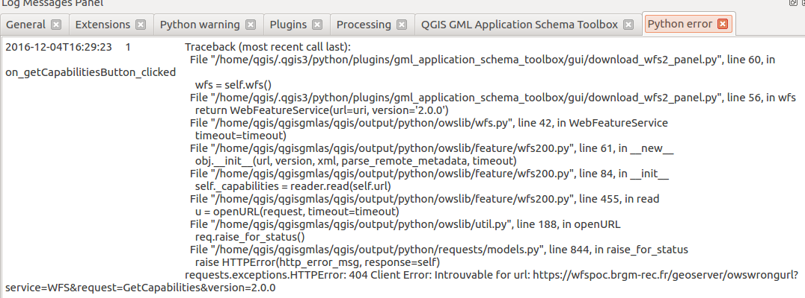
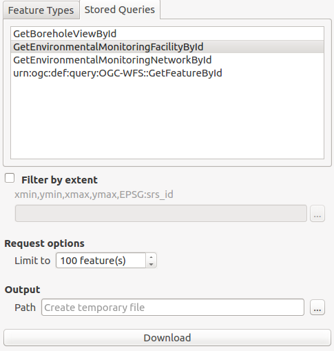
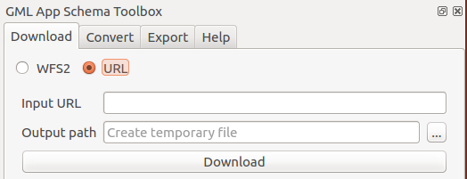

Download GML from WFS 2 services¶
Source document can be GML file already available or they can be downloaded from WFS 2.0.0 OGC services.
This part of the plugin is inspired by the work made in QGIS WFS2 client plugin but used owslib to communicate with the service.
Connect to a service¶
In the download tab define the target service to download data from:
URL: Define the service URL (without GetCapabilities). A list of sample services is available by activating the drop down.Authentication: If the service requires user credentials (Basic Authentication), set the following parameters:
UsernamePassword

Once set, connect to the service using the Get capabilities button.
The Show capabilities provides a simple preview of the
GetCapabilities document. After connection, the list of
Feature Types and Stored Queries are populated.
In case of error, a notification pops up with information about the problem. Check also the log panel for more details about the error:

Download data¶
To download data in GML format, set the following parameters:
Choose a
Feature typeor aStored QueryFilter by extent: Define the bounding box of the area of interestRequest optionsFeature limit: Define the maximum number of features to downloadOutput: Define the output filename (by default, a temporary file is created in the tmp folder)
Click the Download button to start the download.

After download, the convert panel is activated with the path to the downloaded file.
Download from URL¶
The panel can also be used to download file from a URL. This URL
could point to an existing GML file or could be a GetFeature request.
